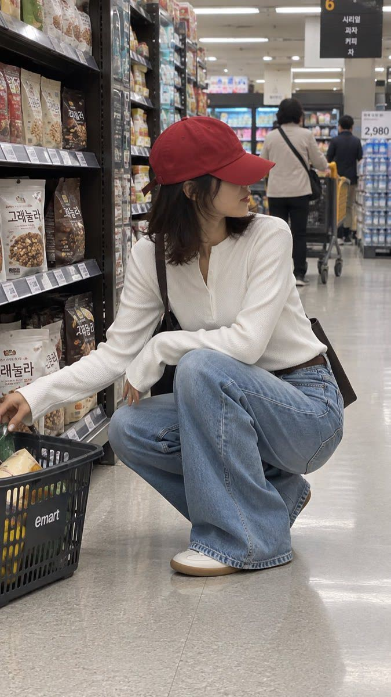

Candid Korean Supermarket Shopper
REA-003RealismGPT Image 2by 虎小象September

A realistic smartphone-style lifestyle fashion photo of a woman crouching in a supermarket aisle, useful for authentic retail or social media product imagery.
Prompt
Create a realistic vertical smartphone photo of a candid grocery-store shopping moment in a Korean supermarket. A young woman with {argument name="hair color" default="dark brown shoulder-length hair"} is crouching low beside the cereal and granola aisle, wearing a {argument name="hat color" default="red"} baseball cap pulled low over her face, a slightly loose white ribbed long-sleeve henley top, light blue wide-leg jeans, white sneakers with beige soles, and a slim black shoulder bag. She is turned in side profile looking to the right, with her left arm extended toward a black plastic shopping basket on the floor; the basket contains visible groceries and has the white “emart” logo on the side. The scene contains exactly one main shopper, one black basket, two background shoppers, one shopping cart in the background, one prominent overhead aisle sign with the number 6 and Korean category text, one visible price sign reading “2,980,” and long shelves packed with cereal, granola, snack, and packaged food bags with Korean labels. Use a natural consumer-phone snapshot style, slightly imperfect framing, realistic indoor fluorescent lighting, mild motion softness, neutral colors, glossy gray supermarket floor reflections, deep aisle perspective, and authentic everyday details. Make it look like a casual buyer-show or store social media photo rather than a studio fashion shoot. No glamour lighting, no exaggerated posing, no artificial-looking skin, no extra people, no watermark.Tags: fashion, 9:16 vertical